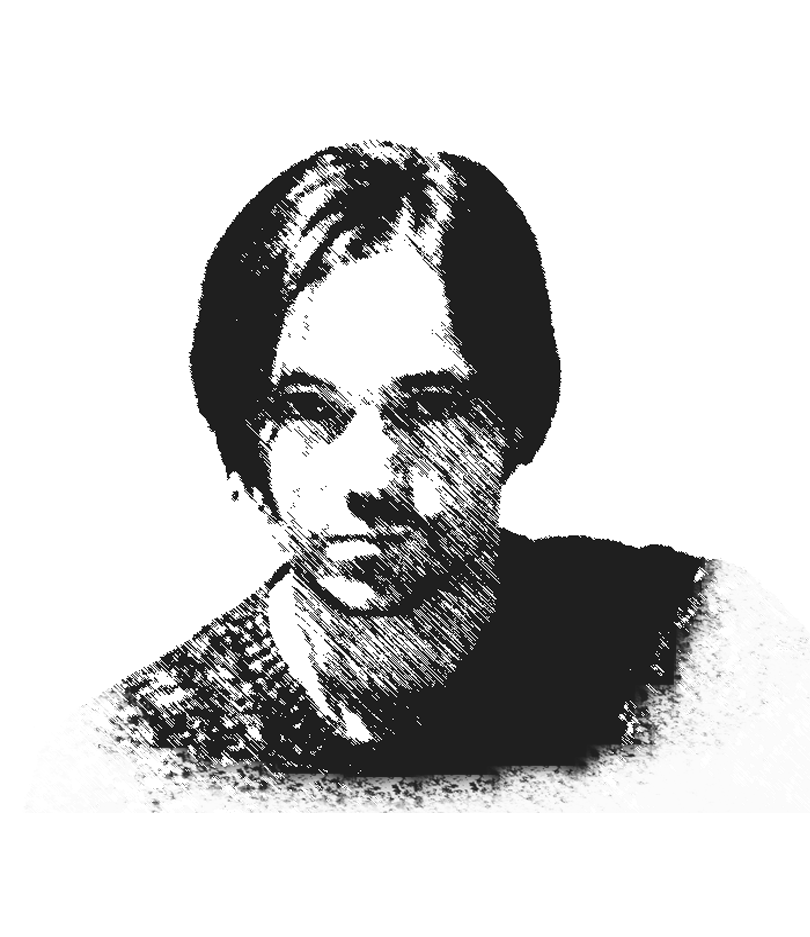
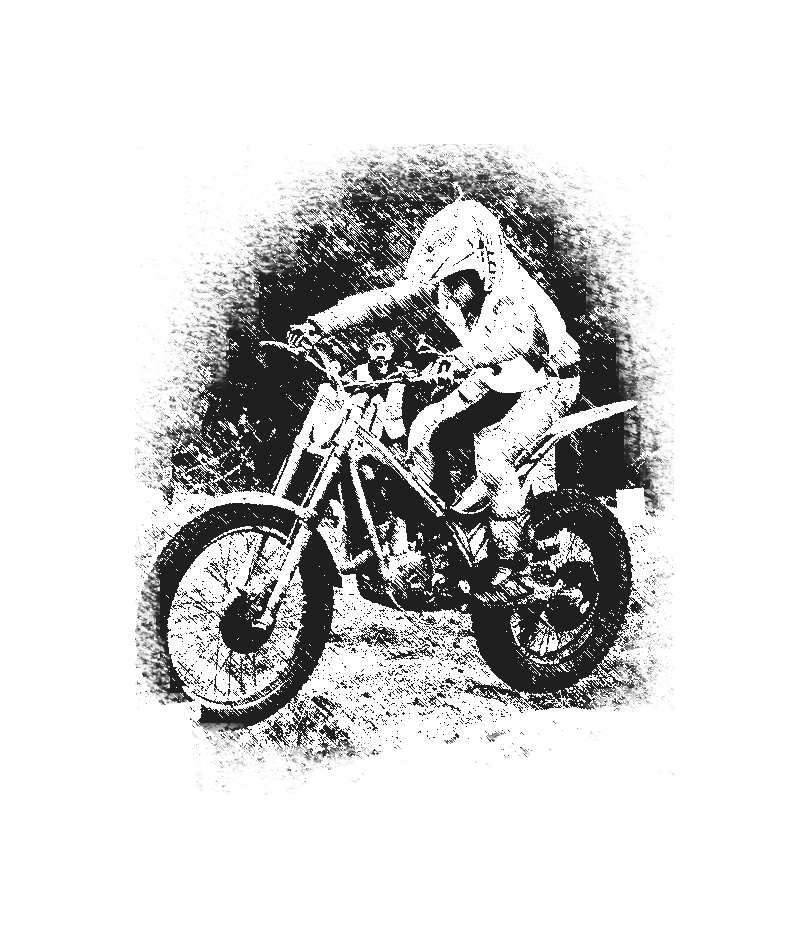

| Rosa del Río Otero |
 Jesús Blanco Villar Jesús Blanco Villar
|
Pere Tobaruela |
 Camilo Seira Camilo Seira
|
| Manuel Soto |  Miguel Ángel Vigo | Manuel Rodríguez | Martín Bouzas |
|  Xurxo Neo |
Rosa del Río Otero
Biografía
Rosa del Río Otero nace en Seaxe (Rois) no 1940, aínda que a súa residencia habitual desde fai anos é en Infesta de Monterrei (Ourense). É a quinta de nove irmáns, seis mulleres e tres homes. Filla de Segunda Otero Fabeiro e Xosé del Río Mosquera.
Ós 22 anos viaxou co seu irmán a Barcelona, onde coñeceu ó seu home, Nélson Salgado Pérez. Alí casouse e tivo ás súas dúas fillas. Xa de regreso a Galicia, tivo a seu fillo en Infesta de Monterrei.
É unha muller que sempre tivo inquedanzas artísticas e literarias, amante das actividades creativas, sempre lle quedou unha conta pendente coa poesía, que saldou xa co seu primeiro libro "Nostalgias del ayer”, cunha gran aceptación por partes dos/as lectores/as. Máis tarde publica o seu segundo poemario en galego “O soño dun amencer” e por último, “A la sombra de un árbol seco”.
Cunha vida sempre marcada por dramas personais e obstáculos é a poesía a súa fonte de liberación e superación.
Obras
POESÍA
- (2006): Nostalgias del ayer.
O soño dun amencer. - (2018): A la sombra de un árbol seco.
Fonte información: contraportada do seu libro Nostalgias del ayer
Jesús Blanco Villar
Biografía
Jesús Blanco Villar (Rois, 26 de marzo de 1962) é un ex ciclista español, profesional entre os anos 1982 e 1998.
O seu mellor ano como profesional foi, sen dúbida, en 1985, ano que conseguiu vencer na Volta a Galicia e na Volta a Valencia, aínda que as súas mellores vitorias chegaron na Volta a España 1986, onde conseguiu dúas etapas, vestíndose incluso unha etapa de líder e a etapa conseguida na Volta de 1987.
Tras abandonalo ciclismo profesional, converteuse en director deportivo dalgúns clubs de ciclismo locais. Foi un dos directores deportivos do Xacobeo Galicia. Desde 2014, é o director do Club Ciclista Padronés-Aluminios Cortizo.
Palmarés
1984
- 1 etapa de la Volta a Cataluña.
1985
- 1 etapa na Vuelta a Andalucía.
- Vuelta a Asturias, máis 2 etapas.
- Vuelta a Castilla y León, máis 1 etapa.
- Vuelta a la Comunidad Valenciana, máis 2 etapas.
- 1 etapa da Vuelta a Murcia.
- Volta a Galicia, máis 2 etapas.
1986
- 1 etapa da Vuelta a Burgos.
- 2 etapas da Vuelta a España.
1987
- 1 etapa da Volta a Galicia.
- Vuelta a Cantabria, máis 2 etapas.
- 1 etapa da Vuelta a Andalucía.
- 1 etapa da Vuelta a España.
- 1 etapa da Vuelta a Andalucía.
1988
- G. P. Cuprosan.
1990
- Memorial Manuel Galera.
1991
- Vuelta al Alentejo.
1995
- 1 etapa na Volta a Tras os Montes e Alto Douro.
1996
- Circuito de Rio Maior.
- Volta ás Terras de Santa Maria Feira.
1997
- 1 etapa do G. P. Sport Noticias.
- 1 etapa no G. P. do Minho.
- G. P. Gondomar, máis 1 etapa.
1998
- Circuito de Rio Maior.
- Prémio de Abertura.
Fonte texto: Wikipedia | Foto: https://laguiadelciclismo.com/wp-content/uploads/2020/01/Jes%C3%BAs-Blanco-Villar.jpg
Pere Tobaruela
Biografía
Pere Tobaruela Martínez (Barcelona, 1965) é un escritor español.
Licenciado en Xeografía e Historia na Universidade de Barcelona, é autor de máis de cincuenta obras, alternando a escritura en castelán, catalán e galego. As súas primeiras publicacións son en catalán, pero cando se trasladou a vivir a Rois, na provincia da Coruña, comezou a escribir en galego.
No 2009 fichou polo Celta de atletismo e foi bronce no absoluto galego de marcha en pista, tamén campión galego de veteranos en 10.000 m. Tamén foi adestrador e directivo do equipo de fútbol gaélico da Estrada. Despois vinculouse ao fútbol feminino, sendo adestrador UEFA Pro e adestrador do feminino senior de Villestro SD.
Nos comezos exerceu de xornalista para despois dedicarse á escrita literaria.
Con Ledicia Costas creou o pseudónimo Pereledi (Pere+Ledi(cia). En 2015 foi concelleiro en Rois por Xente de Rois, repetindo como cabeza de lista nas seguintes eleccións municipais.
Obras
LITERATURA INFANTIL E XUVENIL
- (2005): La Torre dels Moros.
- (2007): La Clau d'Aigua.
A rebelión das rúas. - (2008): Unha vaca marela en Compostela.
¿Unha pantasma na cidade?
Vouvos papar. - (2009): Històries viscudes.
Viaxes dun can de palleiro. - (2010): Na cerna da selva.
A cruz dos Farrapos.
La cripta del apóstol.
Peregrino na sombra.
Camiño de Fisterra-Muxía.
Camiño do Mar de Arousa e Río Ulla.
Camiño do Norte.
Camiño do Sueste.
Camiño Francés.
Camiño Inglés.
Camiño Portugués.
Camiño Primitivo.
Destino final: Santiago. - (2011): Antela e o vento.
Mortos de Ningures.
Desaparizión.
Resurrección. - (2012): Letras de xeo.
- (2013): O códice do Santo Lugar.
Ouro negro.
El pacte.
Vapor. - (2014): Formig4s. Misión París.
Formig4s. Misión Nova York. - (2015): Formig4s. Misión Barcelona.
Celi. Camiño de estrelas. - (2016): Cinco horas con Mauro.
- (2017): Formig4s. Misión Tokyo.
Catro pedras vellas. - (2018): A boa e a avoa.
Auga de Lume. (Premio Meiga Moira 2018) - (2019): Formig4s. Misión Camiño de Santiago.
Carmiña e Fandiño en Narón.
Trebellos. Lume no ceo. - (2020): Mariña e o balón.
NARRATIVA
- (2007): En blanc i negre.
Con ollos de neno. - (2011): Poñente.
- (2012): Eu son Deus e outros contos.
- (2016): A teoría dos contrarios.
- (2018): En branco e negro.
BANDA DESEÑADA
- (2004): Les aventures de Floquet de Ne.
- (2013): O encanto da Pedra Chá.
ENSAIO
- (2003): Floquet per sempre.
Okorobikó. Una biografía de Jordi Sabater Pi.
El delta del Llobregat. Terres d'oblit - (2004): Etologia.
Fonte: Wikipedia e Wikiwand | Foto: https://upload.wikimedia.org/wikipedia/commons/c/c4/Pere_Tobaruela_%28AELG%29-1.jpg
Camilo Seira
Biografía
Camilo Rodríguez Vidal, coñecido no eido da arte como Camilo Seira, nado o 8 de decembro de 1974 en Seira (Rois), é un escultor, entallador e pintor galego.
Entre os anos 1993 e 1994 empezou como aprendiz e axudante no taller do escultor compostelán Fernando García Blanco, discípulo de Francisco Asorey.
Graduouse en Artes Aplicadas, na especialidade de Técnicas de Volume, na Escola de Artes Aplicadas e Oficios Artísticos Mestre Mateo de Santiago de Compostela. Licenciouse en Belas Artes pola Facultade de Belas Artes de Pontevedra. Entre os anos 2004 e 2006 exerce como profesor de escultura na Escola de Canteiros de Poio.
Ten paixón e unha especial sensibilidade pola natureza e os animais, este sentimento aparece plasmado de forma patente na súa obra. Ten vinte e cinco monumentos distribuídos por Galicia.
Obras
ESCULTURAS E MONUMENTOS
Esta é unha escolma das súas obras:
- Avilés de Taramancos, en Noia.
- A Sementeira, en Padrón.
- O farmacéutico Manuel Baltar, en Padrón.
- Monumento ó peregrino, en Padrón.
- O carro, na praza da Leña, Padrón.
- Homenaxe ó ciclista, en Estramundi, Padrón.
- Rosalía, en Rianxo.
- Homenaxe á traiñeira Manuela, en Rianxo.
- A Bela Otero, en Valga.
- Antón Fraguas, en Santiago de Compostela.
Fonte: Galipedia | Foto: https://upload.wikimedia.org/wikipedia/commons/0/02/Camilo_Seira.jpg
Manuel Soto
Biografía
Natural de Rois (1982), comezou no ximnasio como cualquera outra persoa: «Apunteime para estar mellor fisicamente». Pero a espiral do culturismo foi picando cada vez máis, aínda que se trataba dun deporte descoñecido por aquel entón: « Non había ninguén que ou practicase e as nocións eran moi básicas», foi dando coas teclas necesarias para seguir adiante.
Durante anos preparouse cos poucos especialistas da zona. Xente como Santi Carro, Ramón González ou o bicampión mundial Arturo Castañeda levárono polo camiño do éxito.
Os campionatos chegaron e Soto fixo do deporte a súa vida. Converteuse nun profesional do culturismo e abriu un ximnasio e unha tenda de suplementos deportivos.
Palmarés
| Campionato | Ano | Posición |
|---|---|---|
| Campionato galego de fisioculturismo | 2006 | 1º |
| Campionato galego de fisioculturismo | 2007 | 1º |
| Campionato galego de fisioculturismo | 2008 | 1º |
| Campionato do Norte de España de fisioculturismo | 2009 | 1º |
| Campionato do Norte de España de fisioculturismo | 2010 | 1º |
| Campionato do Norte de España de fisioculturismo | 2011 | 1º |
| Campionato de España | 2010 | 1º |
| Campionato de España | 2012 | 1º |
| Campionato de España | 2011 | 1º |
| Campionato de España | 2014 | 2º |
| Campionato de España | 2015 | 2º |
| Campionato de Europa | 2016 | 4º |
| Arnold Clasic Europa | 2018 | 4º |
Fonte: https://www.lavozdegalicia.es/noticia/deportes/2012/08/25/padrones-manuel-soto-suena-mundial/0003_201208S25C10991.htm
Miguel Ángel Vigo
Biografía
Miguel Angel Vigo Baleirón é un novo escultor español, nado en 1981 en Rois, A Coruña.
Miguel Angel Vigo é un experto na realización de esculturas hiperrealistas, polo que é capaz de resaltar os aspectos máis subxectivos dun home. A súa escultura é dura e sutil, e ten unha gran experiencia en materiais e texturas.
Tras formarse no Mestre Mateo de Santiago, Vigo realizou a carreira de Belas Artes en Pontevedra. Nesta época convídano a participar en varias exposicións de artistas emerxentes entre as que destacan o concurso internacional de Cantería e Escultura en Pedra Europäische Steinmetz Tage, en Friburgo (Alemaña), onde se fai co primeiro premio e a mostra Artistas Emerxentes de Galicia e Portugal, promovida pola Consellería de Cultura e o goberno Luso.
Miguel Ángel Vigo convina ademais a súa carreira artística coa ilustración. Traballou en varias películas de animación como deseñador de personaxes e artista conceptual e é ilustrador dende 2014 no programa Espejo Público de Antena 3. Ademais, dende Novembro de 2020 é profesor de Escultura e Debuxo Artístico na Escola de Artes Pablo Picasso, en A Coruña.
Obras
Exposicións e premios:
- (2009): Primeiro premio no concurso internacional de Cantería e Escultura en Pedra Europäische Steinmetz Tage, en Friburgo (Alemaña) e participa na mostra Artistas Emerxentes de Galicia e Portugal, promovida pola Consellería de Cultura e o goberno Luso.
- (2012): ficha pola galería compostelán A punto de Fuga, onde realiza a súa primeira exposición individual, Durmientes. Ese mesmo ano é seleccionado para participar no II Encontro de Artistas Novos da Cidade da Cultura.
- (2013): as súas esculturas son expostas na prestixiosa feira de Arte Internacional Just Madrid.
- (2014): incorpórase á galería Art Deal Project, de Barcelona, participando nunha exposición colectiva, Los hijos de Hypnos, que lle proporciona críticas moi favorables dende a prensa especializada.
- (2015): obtén un accésit no Premio de Escultura Francisco Asorey promovido pola Fundación Francisco Asorey e o concello de Cambados.
- (2016): volve a Barcelona cunha exposición individual onde reflexionaba sobre o fogar, nun sentido amplo, e sobre os sentimentos de vulnerabilidade e inestabilidade que leva por título Lar. En Novembro de ese mesmo ano expón no pazo Torreiro de Cambados Extramundi, una selección das obras máis representativas do seu universo artístico.
- (2017): é seleccionado para a exposición da Bienal de Pontevedra Novos Valores coa obra Espazo para o diálogo.
- (2018): dá o salto ao mercado portugués da man da galería Ainori Gallery de Lisboa. A esta exposición seguiran outras en galerías como NHDesing, na cidade de O Porto, ou Nuno Sacramento en Aveiro durante o 2020 e 2021.
Fonte: https://www.artsper.com/es/artistas-contemporaneos/spain/4235/miguel-angel-vigo | Foto: http://miguelangelvigoart.blogspot.com/
Manuel Rodríguez Pérez
Biografía
Manuel Rodríguez Pérez (1991), natural de Oín, é biólogo e investigador do LINC (Laboratorio de investigación en Neurociencias Clínicas) de Santiago de Compostela.
Graduado en Bioloxía pola Universidade de Santiago de Compostela en 2014, no marco do Grao en Bioloxía realizou un TFG que levou por título “Organización citoarquitectónica do hipotálamo no rato mutante reeler” levado a cabo no departamento de Bioloxía Celular do Centro de Investigacións Biolóxicas da Universidade de Santiago (CIBUS).
En 2015 obtivo o título de Máster en Neurociencia, para a consecución do cal defendeu o seu TFM titulado “ Reprogramación in vitro de cultivos primarios de astrocitos a neuroblastos como proba de concepto dunha nova aproximación terapéutica na isquemia cerebral” desenvolto no Laboratorio de investigación en Neurociencias Clínicas ( LINC) pertencente ao Instituto de Investigación Sanitaria de Santiago de Compostela ( IDIS).
Actualmente segue traballando no LINC e realizou a súa tese doutoral “Desenvolvemento de nanoestructuras teranósticas en etapas preclínicas da Enfermidade de Alzheimer”, englobada no Programa de Doutoramento en Medicina Molecular.
Obras
Fonte: http://www.linc-stg.eu/equipo.aspx | Foto: https://www.gciencia.com/wp-content/uploads/2021/04/mr-tese.jpg
Martín Bouzas
Biografía
Martín Bouzas Rey é un ciclista español , nado o 20 de novembro de 1997 en Rois.
Iniciouse no ciclismo aos 16 anos no Club Ciclista Padronés. Só un ano despois, revelouse ao converterse en campión de España de contra o reloxo, na categoría júnior (menores de 19 anos).
En 2016 incorporouse ao club Grupo Deportivo Super Froiz . En xuño distinguiuse ó proclamarse campión de España na contra o reloxo UCI , poucos meses antes de cumprir os 19 anos. Tras este novo título, os seguidores españois considérano unha das principais esperanzas do país. Uns días despois, foi convidado a un campo de adestramento de Trek- Segafredo, xunto con varios ciclistas do equipo World Tour. Logo tivo a súa primeira selección para o equipo nacional para o Campionato de Europa en Plumelec . Na categoría esperanzas, tomou 35 º lugar na contra o reloxo.
En 2017 , foi seleccionado pola selección española para participar na Volta a Asturias , entre os profesionais. En xuño, finalizou terceiro no campionato de España de contra o reloxo UCI , por detrás de dous corredores do comité aragonés: Jaime Castrillo e Sergio Samitier.
Para a tempada 2018 , o piloto galego firma con Lizarte , filial do equipo World Tour Movistar. O técnico Eusebio Unzué , que está na orixe desta contratación, eloxia especialmente as súas boas habilidades de rodadura. En xuño converteuse por segunda vez na súa carreira en campión de España de contra o reloxo , por diante do seu compañeiro Roger Adrià.
En 2020 , convértese en profesional no novo equipo de Kern Pharma , unha rama do club Lizarte. Detén a súa carreira ao final da tempada 2020, para traballar como carteiro. Explica que non sentía feliz como ciclista profesional.
Palmarés
| Campionato | Categoría | Ano | Posición |
|---|---|---|---|
| Campionato de España de contra o reloxo | Júnior | 2015 | 1º |
| Campionato de España de contra o reloxo | Sub-23 | 2016 | 1º |
| Gran Premio da cidade de Vigo II | 2016 | 2º | |
| Circuito de Galicia de contra o reloxo | Por equipos | 2017 | 1ªetapa |
| Liga española de contra o reloxo | Sub-23 | 2017 | 3º |
| Campionato de España contra o reloxo | Sub-23 | 2018 | 1º |
| Circuito de Galicia de contra o reloxo | Por equipos | 2019 | 1ªetapa |
| Ereñoko Udala Sari Nagusia | 2019 | 2º | |
| Campionato de España contra o reloxo | Sub-23 | 2019 | 2º |
Fonte: Wikipedia | Foto: https://equipokernpharma.com/equipo-ciclista/wp-content/uploads/2019/12/Bouzas-02-450x675.jpg
Xurxo Neo
Biografía
Xurxo Neo, veciño de Urdilde (Rois), nado no ano 2007, proclámase en novembro do ano 2020 campión de España de trial na categoría xuvenil por segundo ano consecutivo.
A Xurxo a afección vénlle de familia. O seu pai, Javier, xa competía en trial e todos lembran a Xurxo sobre unha moto eléctrica desde ben pequeniño. Con só 7 anos xa foi campión galego infantil. A partir deste ano, compite en categorías máis altas das que lle corresponderían por idade, coas miras postas na aprendizaxe e no nacional. Os froitos son os títulos de xuvenil B o ano pasado e de xuvenil A neste.
Palmarés
| Campionato | Categoría | Ano | Posición |
|---|---|---|---|
| Copa Galega de Trial | Alevín | 2014 | 1º |
| Copa Galega de Trial | TR4 | 2018 | 2º |
| Copa Galega de Trial | TR3 | 2019 | 3º |
| Copa de España de Trial | Xuvenil B | 2019 | 1º |
| Copa de España de Trial | Xuvenil A | 2020 | 1º |
Fonte: Revista Debullar Concello de Rois | Foto: https://da-dk.facebook.com/ConcelloDeRois/photos/pcb.2182964955298943/2182964871965618/?type=3&theater